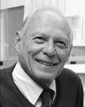

Please note: the AAS Obituaries are temporarily being hosted on this website while their full content is being ingested into the PubPub publishing platform newly adopted by the Bulletin of the American Astronomical Society. When the migration is complete, your existing links will take you to the final, migrated content. Contact peter.williams@aas.org with any questions.
A. Keith Pierce (1918-2005)
A. Keith Pierce was a solar astronomer who will be remembered for bringing the physics lab to the telescope and for his design of the world's largest solar telescope, the 1.5-meter McMath Telescope on Kitt Peak in Arizona. Born in Lincoln, Nebraska, he died of cancer in Tucson on 11 March 2005. He was eighty-six.
His father, Tracy Pierce, had gone to graduate school in Berkeley, California, with a major in mathematics and a minor in astronomy. Fellow students of his class included Seth Nicholson and Donald Shane, people who were later to influence young Keith's life.
Tracy Pierce received an appointment as an instructor, later Professor, of mathematics at the University of Nebraska in Lincoln. In his spare time dad Tracy became something of a telescope nut, following "the bible" —Albert Ingall's A.T.M (Amateur Telescope Making). His enthusiasm rubbed off on his son.
Seth Nicholson, who became a famous Mt. Wilson Observatory astronomer, and Donald Shane from Berkeley, both stayed at the Pierce home while on their Sigma Xi lecture tours. After two years at Lincoln, followed by two more at Berkeley, Keith had earned his bachelor's degree in astronomy.
During World War II, Dr. Shane became personnel director at the E.O. Lawrence Radiation Lab and arranged for Keith to work there at the cyclotron. A crash program to produce U235 from U238 was under way. At a crucial point in 1942 the cyclotron turned out the sought-after material. Much celebration ensued among the Rad Lab leaders. During this gala, Keith was on the night-shift and pretty much on his own. It was then that he turned a valve to the right, when left was called for, and the entire system went down. Shortly thereafter he was sent to Oak Ridge for the duration of the war. He cannot have been thought of badly, however, because he was invited to the Trinity test in New Mexico. (He didn't go because of the pending birth of his first son, John.)
The year 1945 found Keith back in Berkeley working on his Ph.D. under Shane. After finishing this degree, Keith was brought by Leo Goldberg to the University of Michigan, Ann Arbor, and then to Lake Angelus, where his association with Robert McMath began. His prowess with instrumentation led to a mapping of the infrared solar spectrum with unprecedented accuracy.
McMath, a Detroit engineer, had this dream of building a large solar telescope at a suitable elevated and dry location. Through friends in Washington (viz. the Director of the Bureau of the Budget), he found funds to construct this telescope under the guidance of Keith Pierce. Kitt Peak National Observatory was an ancillary result.
The above is a distillation of an interview with Keith regarding his career on the occasion in 1992 of the re-dedication of the McMath-Pierce Solar Facility. I would add that Keith carried out seminal work on the solar spectrum. These include "The Chromospheric Spectrum Outside Eclipse, λλ 3040-9266," with Jim Breckenridge, "The Kitt Peak Table of Photographic Solar Spectrum Wavelengths," and with Charles Slaughter, "Solar Limb Darkening, I and II." For sixteen years, Keith directed the Solar Program of KPNO with a gentle hand. At home with his first wife, Mildred, and later with his second, Trudy, he extended warm hospitality to visitors from around the world. He leaves three children: John (deceased), Barbara Isabel Orville, and Willard Ross.
Obituary written by: William Charles Livingston (NOAO/National Solar Observatory)
BAAS Citation: BAAS, 2006, 38, 1281
SAO/NASA ADS Bibcode: 2006BAAS...38.1281L